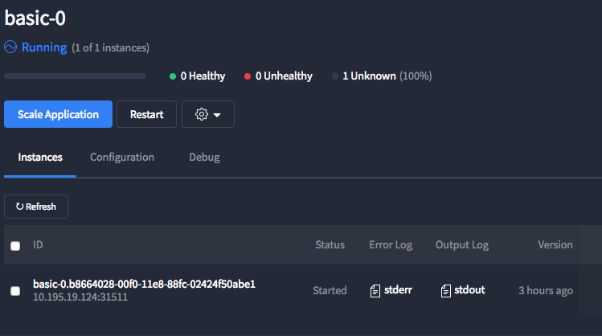
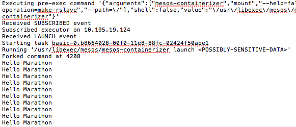
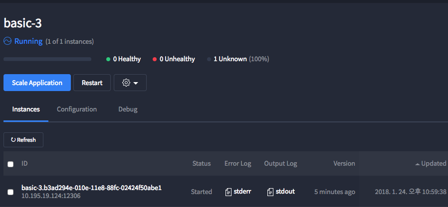

메소스 마라톤(Mesos Marathon) 어플리케이션 사용하기 - 1
Mesos Marathon - Application Basic
어플리케이션은 마라톤의 필수 기능입니다.
각 어플리케이션은 일반적으로 여러 호스트에서 실행되는 많은 인스턴스가있는 long-running service를 나타냅니다.
어플리케이션 인스턴스를 Task라고 부릅니다.
Application Definition은 작업을 유지하고 시작하는데 필요한 모든것을 설명하는 녀석입니다.
주의사항 > Marathon은 어플리케이션 이름에 점(.)을 허용하지만 점으로 표시된 이름은 적절한 서비스 검색 동작을 방해 할 수 있습니다. 서비스 검색 매커니즘을 사용하려는 경우, 응용프로그램 이름에 점을 넣으면 안됩니다.
정식 사이트에서는 Hello Marathon을 띄워보는 인라인쉘 스크립트를 소개하는데요.
같이 한번 도전해보겠습니다.
stdout으로 print한 이후 5초 동안 잠에드는 짓을 반복하는 앱입니다.
그에 관련된 JSON Application Definition 입니다.
{
"id": "basic-0",
"cmd": "while [ true ] ; do echo 'Hello Marathon' ; sleep 5 ; done",
"cpus": 0.1,
"mem": 10.0,
"instances": 1
}
애플리케이션을 정의하고 실행하면 Marathon이 Mesos로 실행을 넘겨줍니다.
Mesos는 각 작업에 대한 샌드박스 디렉토리를 만듭니다.
샌드박스 디렉토리는 실행환경으로 작동하며 관련 로그 파일을 가진 각각의 에이전트 노드의 디렉토리입니다.
또한 stderr 및 stdout 스트림도 샌드박스 디렉토리에 기록됩니다.
 [마라톤ui]잘돌아가고 있는 베이직제로 인스턴스!! 우측에 보면 Output log인 stdout을 받아봅시다
 [stdout파일]“넌 몰랐겠지만 난 찍고 있었어.” 5초에 한번씩 열심히 찍고 있었습니다 그는
uris
어떤 어플리케이션을 실행할려면 대게 파일 또는 파일모음에 의존해야됩니다.
리소스 할당을 관리하기 위해서 마라톤은 URI 개념을 가지고 있습니다.
URI는 Mesos Fetcher가 특정 리소스를 추출하기 위해 사용됩니다.
일단 다음예제좀 같이 살펴보죠
{
"id": "basic-1",
"cmd": "`chmod u+x cool-script.sh && ./cool-script.sh`",
"cpus": 0.1,
"mem": 10.0,
"instances": 1,
"uris": [
"https://example.com/app/cool-script.sh"
]
}
해당 Definition은 cmd를 실행시키기 이전에
해당 uri에서 쉘스크립트 파일을 다운로드 받습니다. (메소스를 통해)
그리고 앱의 작업 샌드박스에서 사용가능하도록 만듭니다.
참고 > 메소스 v.0.22이상에서 Fetcher코드는 더이상 다운로드한 파일을
기본적으로 실행 가능하게 만들지는 않습니다.
위의 예에서 cmd는 파일을 실행가능하게 만듭니다.
즉, 마라톤은 아카이브에 있는 애플리케이션 리소스를 처리하는 방법을 알고 있다는 말이에요. 현재의 마라톤은 메소스를 통해 cmd를 실행하기전 각종 압축파일들을 압축풀기위한 첫번째 시도를 수행합니다.
다음 예제는 마라톤이 압축리소스파일을 어떻게 다루는지 잘보여줍니다.
{
"id": "basic-2",
"cmd": "app/cool-script.sh",
"cpus": 0.1,
"mem": 10.0,
"instances": 1,
"uris": [
"https://example.com/app.zip"
]
}
해당 uri의 압축파일에는 cool-script.sh가 포함되어 있습니다.
집파일을 다운로드받아 압축을 풀면 zip파일의 내용이 추출되는 위치에 app.zip 파일 이름에 따른 디렉토리가 생성됩니다.
그래서 위에 cmd에서 app이라는 디렉토리의 하위에 있는 스크립트를 실행합니다.
도커기반 어플리케이션
마라톤을 사용하면 Docker이미지를 사용하는 어플리케이션을 쉽게 실행할 수 있습니다. 다음예제는 파이썬3 기반의 앱이며 portMappings라는 컨테이너 옵션을 통해 포트를 매핑합니다. 호스트 포트는 메소스 에이전트의 임의의 포트에 할당되도록 0을 설정합니다. 컨테이너 내부에서 웹서버 포트는 8080으로 뚫습니다.
{
"id": "basic-3",
"cmd": "python3 -m http.server 8080",
"cpus": 0.5,
"mem": 32.0,
"networks": [ { "mode": "container/bridge" } ],
"container": {
"type": "DOCKER",
"docker": {
"image": "python:3"
},
"portMappings": [
{ "containerPort": 8080, "hostPort": 0 }
]
}
}
이제 Terminal을 키고 Http API를 사용해서 앱을 배포해봅니다.
위의 JSON 파일을 basic-3.json 으로 저장한뒤
해당 디렉토리에가서 아래의 curl 명령문을 실행해봅니다.
여러분이 터치할 부분은 어플리케이션 생성을 요청할 여러분의 마라톤 주소입니다.
{marathon url} 여기에 여러분의 마라톤 주소를 넣어주세요!
curl -X POST {marathon url}/v2/apps -d @basic-3.json -H "Content-type: application/json"
 터미널 창에서 마라톤앱에 http요청을 보내보았습니다~ 요청된 basic-3.json의 디테일이 찍히네요
터미널 창에서 마라톤앱에 http요청을 보내보았습니다~ 요청된 basic-3.json의 디테일이 찍히네요
 잘돌아갑니다
참고자료
마라톤 공식 Document
(https://mesosphere.github.io/marathon/docs/application-basics.html)